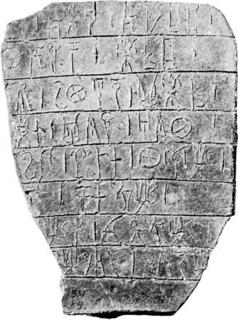
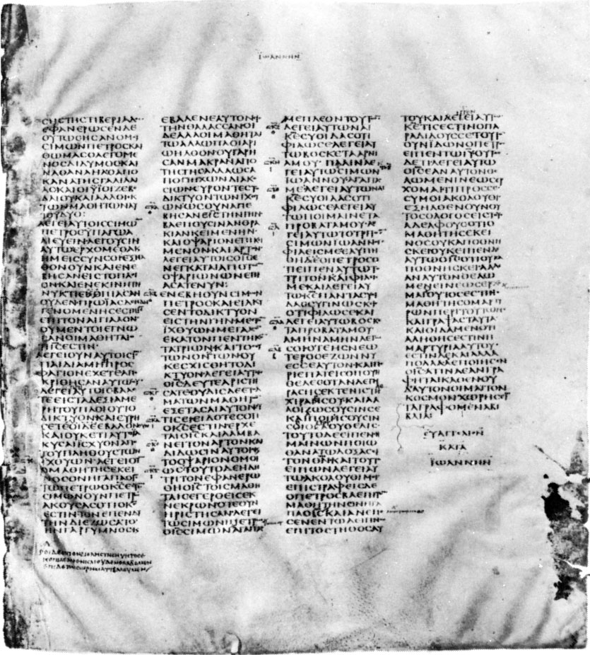

Origins to the 8th century CE
The oldest Greek writing, syllabic signs scratched with a stylus on sun-dried clay, is that of the Linear B tablets found in Knossos, Pylos, and Mycenae (1400–1200 BCE). Alphabetic writing, in use before the end of the 8th century BCE, is first found in a scratched inscription on a jug awarded as a prize in Athens. The consensus is that the Homeric poems were written down not later than this time; certainly from the time of the first known lyric poet of ancient Greece, Archilochus (7th century BCE), individuals committed their works to writing. But the vehicles of literary writing have perished. Scratchings on pottery or metal and then texts deliberately cut in bronze or marble or painted on vases are, until about 350 BCE, the only immediate evidence for the way the Greeks wrote, and their study is normally treated as the province of epigraphy.

A find in 1962 at Dervéni (Dhervénion), in Macedonia, of a carbonized roll of papyrus (Archaeological Museum, Thessaloníki, Greece) offers the oldest example of Greek handwriting and the only one preserved in the Greek peninsula (end of the 4th century BCE). From then until the 4th century CE, there are countless texts, especially on papyrus. Found in Egypt and, with a few exceptions, written there, these texts have given a firm foundation for knowledge about the handwriting of the era. From outside Egypt there is a Greek library buried in Herculaneum, 79 CE; and papyri and parchments from Owrāmān, Kurdistan, 1st century BCE; from Dura-Europus on the Euphrates, 3rd century BCE to 3rd century CE; from Nessana, 6th century CE; and from the Dead Sea area (Qumrān, 1st centuries BCE and CE; Murabbaʿat and ʿEn Gedi, 2nd century CE). A number of original vellum manuscripts have survived from the 4th century CE onward, preserved in libraries such as at the monastery of Saint Catherine at Mount Sinai. These materials of diverse origin suggest that the forms and shape of Greek handwriting were remarkably constant throughout the Greek world, wherever writing was practiced and whatever material was used; within this consistent framework it is occasionally possible to distinguish local variations (as between the contract hands of 1st-century-CE Dura and of Egypt).
The principal vehicles for writing were wax tablets incised with a stylus or a prepared surface of skin, such as leather and vellum, or of papyrus written on with a pen. Other surfaces—e.g., broken pieces of pottery, lead, wood, and even cloth—were also used. To some extent the forms of letters were affected by the resistance of the material to the writing instrument. It is likely that the use as a pen of a hard reed, split at the tip and cut into a nib (which had to be constantly sharpened), is an invention of the Greeks. Egyptian scribes used a soft reed, with which ink was brushed on.
Until about 300 CE, ink was usually made of a fine carbon powder such as lampblack, mixed with gum arabic and water, which even today retains its black lustre. Carbon inks were then replaced by iron-gall inks made from a mixture of tannic acid (made from oak galls soaked in water), ferrous sulphate, and gum arabic. There seem to have been several reasons for the changeover to iron-gall inks: they were easier and more economical to make, they could be made in quantity, and they did not flake off the surface of vellum (which was becoming the preferred writing surface of the time) as carbon inks did. Iron-gall ink does have certain drawbacks: it has a tendency to fade and oxidize over time, turning from a dark grayish-black when freshly written to a characteristic brown (which today is often associated with early manuscripts), and it sometimes has a corrosive effect on vellum, causing the writing from one side of a page to bleed through to the other. On paper, some iron-gall inks have actually eaten through the writing surface. Erasures, which could be made on wax with the blunt end of a stylus and on papyrus by wiping with a wet sponge, were more difficult on vellum written with iron-gall inks. Corrections were made by scraping the faulty text off with the edge of a knife, rubbing the surface with an abrasive, and then burnishing it to make it smooth enough to receive ink again. Sometimes when vellum was not easily available or was relatively expensive, an outdated text might be erased and written over. Since the ink actually dyes the vellum, traces of the original text often remain and appear faintly under newly written text. Such doubly written manuscripts are called palimpsests.

The fundamental distinction in types of handwriting is that between book hands and documentary hands. The former, used especially for the copying of literature, aimed at clarity, regularity, and impersonality and often made an effect of beauty by their deliberate stylization. Usually they were the work of professionals. Outstanding calligraphy is not common among papyrus finds, perhaps because they are mainly provincial work. But the British Museum Bacchylides (discussed further under “The Roman period,” see below) or the Bodleian Library Homer can stand comparison with any later vellum manuscript from outside Egypt. Book texts are written in separately made capitals (often called uncials, but in Greek paleography, except for the time-hallowed class of biblical uncials, the term is better avoided) in columns of writing, with ample spaces between columns and good margins at head and foot. Punctuation (usually by high dot, a point next to the top of the last letter of a section) is minimal or completely absent; accents are inserted only in difficult poetic texts or as practice by children; and letters are not grouped into separate words.